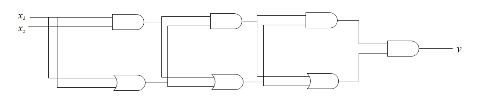

算法导论34.4 Exercises 答案
34.4-1
可以构造的电路形式如下，如图是一个\(n=3\)规模的电路：

可见，第\(k(k\ge 1)\)层的电路的输出端所代表的表达式，就包含了\(2^k-1\)个运算符，因此这个电路一共有\(n\)层时，整个电路的输出端一共有\(2^{n+1}-1\)个运算符，即这个表达式的长度是指数增长的。
34.4-2
对于\(\phi'\)中的所有子句，经过3个步骤后可以得到：
\(\begin{aligned} \phi_0'''&=y&&=(y \lor p \lor q) \land (y \lor p \lor \neg q) \land (y \lor \neg p \lor q) \land (y \lor \neg p \lor \neg q)\\ \phi_1'''&=(y_1 \leftrightarrow (y_2 \land \neg x_2)) &&= (\neg y_1 \lor \neg y_2 \lor \neg x_2) \land (\neg y_1 \lor y_2 \lor \neg x_2) \land (\neg y_1 \lor y_2 \lor x_2) \land (y_1 \lor \neg y_2 \lor x_2)\\ \phi_2'''&=(y_2 \leftrightarrow (y_3 \lor y_4)) &&= (\neg y_2 \lor y_3 \lor y_4) \land (y_2 \lor \neg y_3 \lor \neg y_4) \land (y_2 \lor \neg y_3 \lor y_4) \land (y_2 \lor y_3 \lor \neg y_4)\\ \phi_3'''&=(y_3 \leftrightarrow (x_1 \rightarrow x_2)) &&= (\neg y_3 \lor \neg x_2 \lor x_2) \land (y_3 \lor \neg x_1 \lor \neg x_2) \land (y_1 \lor x_1 \lor \neg x_2) \land (y_3 \lor x_1 \lor x_2)\\ \phi_4'''&=(y_4 \leftrightarrow \neg y_5) &&= (\neg x_4 \lor \neg y_5 \lor q) \land (\neg x_4 \lor \neg y_5 \lor \neg p) \land (x_4 \lor y_5 \lor p) \land (x_4 \lor y_5 \lor \neg p)\\ \phi_5'''&=(y_5 \leftrightarrow (y_6 \lor x_4)) &&= (\neg y_5 \lor y_6 \lor x_4) \land (y_5 \lor \neg y_6 \lor \neg x_4) \land (y_5 \lor \neg y_6 \lor x_4) \land (y_5 \lor y_6 \lor \neg x_4)\\ \phi_6'''&=(y_6 \leftrightarrow (\neg x_1 \leftrightarrow x_3)) &&= (\neg y_6 \lor \neg x_1 \lor \neg x_3) \land (\neg y_6 \lor x_1 \lor x_3) \land (y_6 \lor \neg x_1 \lor x_3) \land (y_6 \lor x_1 \lor \neg x_3) \end{aligned}\)
因此最终\(\phi\)转化后得到\(3\text{-CNF}\)的表达式\(\phi'''\)为：
\(\begin{aligned} \phi'''=&(y \lor p \lor q) \land (y \lor p \lor \neg q) \land (y \lor \neg p \lor q) \land (y \lor \neg p \lor \neg q)\land\\ &(\neg y_1 \lor \neg y_2 \lor \neg x_2) \land (\neg y_1 \lor y_2 \lor \neg x_2) \land (\neg y_1 \lor y_2 \lor x_2) \land (y_1 \lor \neg y_2 \lor x_2)\land\\ &(\neg y_2 \lor y_3 \lor y_4) \land (y_2 \lor \neg y_3 \lor \neg y_4) \land (y_2 \lor \neg y_3 \lor y_4) \land (y_2 \lor y_3 \lor \neg y_4)\land\\ &(\neg y_3 \lor \neg x_2 \lor x_2) \land (y_3 \lor \neg x_1 \lor \neg x_2) \land (y_1 \lor x_1 \lor \neg x_2) \land (y_3 \lor x_1 \lor x_2)\land\\ &(\neg x_4 \lor \neg y_5 \lor q) \land (\neg x_4 \lor \neg y_5 \lor \neg p) \land (x_4 \lor y_5 \lor p) \land (x_4 \lor y_5 \lor \neg p)\land\\ &(\neg y_5 \lor y_6 \lor x_4) \land (y_5 \lor \neg y_6 \lor \neg x_4) \land (y_5 \lor \neg y_6 \lor x_4) \land (y_5 \lor y_6 \lor \neg x_4)\land\\ &(\neg y_6 \lor \neg x_1 \lor \neg x_3) \land (\neg y_6 \lor x_1 \lor x_3) \land (y_6 \lor \neg x_1 \lor x_3) \land (y_6 \lor x_1 \lor \neg x_3) \end{aligned}\)
34.4-3
这种策略是错误的。如果\(\phi\)有\(n\)个自由布尔变量，那么构造出的真值表一共有\(2^n\)项，从这个真值表导出的表达式的长度至少是\(\Omega(2^n)\)的，而不是多项式长度的。因此原结论错误。
34.4-4
根据题目34.3-7的结论，为了证明语言\(L=\text{TAUTOLOGY}\)对\(\text{co-NP}\)是完全的，只需要证明\(\overline{L}\)是NP完全的即可，其中\(\overline{L}\)是如下布尔表达式\(\phi\)所表示的集合：存在一组输入变量，使得这个表达式的输出值为\(0\)。
首先证明\(\overline{L}\in \text{NP}\)。证明过程非常简单：验证算法可以在多项式时间内对一个表达式\(\phi\)和一组输入\(x\)，判断出表达式的输出值是否为\(0\)。这个步骤和定理34.9对应步骤的证明是一样的，因此\(\overline{L}\in\text{NP}\)。（也可以从题目34.2-8直接得出此结论。）
接下来证明\(\overline{L}\)是NP困难的。根据定理34.9得知，问题\(\text{SAT}\)是NP完全的。因此，通过证明\(\text{SAT}\le_P \overline{L}\)，从而完成此证明。对于问题\(\text{SAT}\)中的任意一个表达式\(\phi\)，存在一组输入\(x\)使得\(\phi\)的输出为\(0\)。规约函数\(f\)则是将表达式\(\phi\)进行取反，即\(f(\phi)=\neg\phi\)，它可以在多项式时间内被计算出来。因此有\(\text{SAT}\le_P\overline{L}\)，也就是说，\(\overline{L}\)是NP困难的。
因此，\(\overline{L}\)是NP完全的，原来的结论成立。
34.4-5
对于一个析取范式\(\phi\)，它是表示为所有子句的或，并且每个子句都是多个文字的与。因此每个子句\(\phi_i\)和\(\phi\)之间的关系可以写成
\[\phi=\bigvee_{i=1}^k \phi_i\]
因此，对于一个析取范式的可满足性问题，只要其中一个子句的值为\(1\)，那么整个\(\phi\)的输出值为\(1\)。我们可以枚举每个子句\(\phi_i\)。由于\(\phi\)是一系列文字的与运算，只要\(\phi_i\)有一个输入为\(1\)即可满足要求。检查\(\phi_i\)中的所有文字，如果不存布尔变量\(x_j\)，使得\(x_j\)和\(\neg x_j\)都在这个子句中，子句\(\phi_i\)的值就可以为\(1\)。只要将在子句\(\phi_i\)中，没有取反\(\neg\)的变量赋予\(1\)，带有取反符号的赋予\(0\)即可，最终这是一个证明该析取范式是可满足的证据。如果\(\phi\)每一个子句，都有某个布尔变量\(x_j\)和\(\neg x_j\)都在这个子句中，那么\(\phi\)是不可满足的。每个子句只需要线性的时间即可完成判断。
因此，判断析取范式的可行性问题\(\text{DNF-SAT}\in P\)，原结论成立。
34.4-6
如果存在一个多项式算法DECIDE-FORMULA-SATISFIABILITY用于判断布尔表达式的可满足性。那么考虑如下程序FIND-SATISFYING-ASSIGNMENT用于为每个布尔变量赋值。
1 | //A是某个布尔表达式，X是自由变量集合 |
FIND-SATISFYING-ASSIGNMENT的基本思想是，对每个变量尝试进行\(x_i\)赋值，如果赋予其中一个值后（程序中是\(1\)），对于剩下的变量来说，这个布尔表达式是可满足的，那么当前赋值是正确的，否则赋予另外一个值（程序中是\(0\)）。
所有化简过程都可以在多项式时间内完成。上面的算法中，如果布尔表达式包含了\(n\)个自由变量，那么FIND-SATISFYING-ASSIGNMENT只会调用\(n\)次DECIDE-FORMULA-SATISFIABILITY，并且每次调用的规模都不大于原来的布尔表达式的长度。由于DECIDE-FORMULA-SATISFIABILITY是多项式时间的算法，因此FIND-SATISFYING-ASSIGNMENT也是多项式时间的算法，原结论成立。
34.4-7
假设这个恰有两个文字的合取范式\(\phi\)被表示成\(\displaystyle{\phi=\bigwedge_{i=1}^n y_i\lor z_i}\)，其中\(y_i,z_i\)是第\(i\)个子句的文字\(\phi_i\)，一共有\(k\)个自由变量。考虑有向图\(G=(V,E)\)，其中\(V=\{x_1,\neg x_1,x_2,\neg x_2,\dots,x_k,\neg x_k\}\)，即表示这\(k\)个自由变量可能的\(2k\)个文字。
对于每个子句\(\phi_i\)，将边\((\neg y_i,z_i),(\neg y_i,z_i)\)添加到\(E\)中。原因是，如果\(y_i\)和\(z_i\)其中一个被赋予\(0\)，那么另一个变量就必须赋予\(1\)。
接下来对图\(G\)运行章节20.5所描述的求解强连通算法STRONGLY-CONNECTED-COMPONENTS。如果存在某个\(i\in[1,k]\)，使得\(x_i,\neg
x_i\)都在一个强连通分量中，那么说明\(x_i\)对其中一个变量赋值都会导致\(x_i\)将会对另外一个变量进行赋值，这是不可能的，因此\(\phi\)此时不可满足。否则\(\phi\)是可满足的。
由于建立整个图\(G\)只需要花费\(O(n)\)的时间，并且算法STRONGLY-CONNECTED-COMPONENTS的时间复杂度为\(O(E+V)\)，因此恰好\(2\)个子句的可满足行问题是多项式时间内可判定的，即\(\text{2-CNF-SAT}\in P\)。